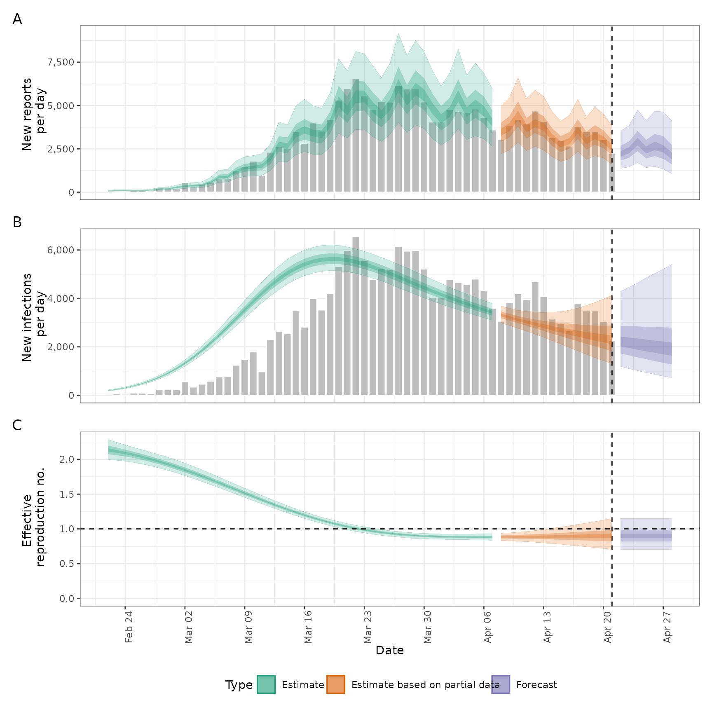

Estimate Infections, the Time-Varying Reproduction Number and the Rate of Growth
Source:R/estimate_infections.R
estimate_infections.Rd![[Maturing]](figures/lifecycle-maturing.svg) Uses a non-parametric approach to reconstruct cases by date of infection
from reported cases. It uses either a generative Rt model or non-parametric
back calculation to estimate underlying latent infections and then maps
these infections to observed cases via uncertain reporting delays and a
flexible observation model. See the examples and function arguments for the
details of all options. The default settings may not be sufficient for your
use case so the number of warmup samples (
Uses a non-parametric approach to reconstruct cases by date of infection
from reported cases. It uses either a generative Rt model or non-parametric
back calculation to estimate underlying latent infections and then maps
these infections to observed cases via uncertain reporting delays and a
flexible observation model. See the examples and function arguments for the
details of all options. The default settings may not be sufficient for your
use case so the number of warmup samples (stan_args = list(warmup)) may
need to be increased as may the overall number of samples. Follow the links
provided by any warnings messages to diagnose issues with the MCMC fit. It
is recommended to explore several of the Rt estimation approaches supported
as not all of them may be suited to users own use cases. See
here
for an example of using estimate_infections within the epinow wrapper to
estimate Rt for Covid-19 in a country from the ECDC data source.
Usage
estimate_infections(
data,
generation_time = gt_opts(),
delays = delay_opts(),
truncation = trunc_opts(),
rt = rt_opts(),
backcalc = backcalc_opts(),
gp = gp_opts(),
obs = obs_opts(),
stan = stan_opts(),
horizon = 7,
CrIs = c(0.2, 0.5, 0.9),
filter_leading_zeros = TRUE,
zero_threshold = Inf,
weigh_delay_priors = TRUE,
id = "estimate_infections",
verbose = interactive(),
reported_cases
)Arguments
- data
A
<data.frame>of confirmed cases (confirm) by date (date).confirmmust be numeric anddatemust be in date format.- generation_time
A call to
gt_opts()(or its aliasgeneration_time_opts()) defining the generation time distribution used. For backwards compatibility a list of summary parameters can also be passed.- delays
A call to
delay_opts()defining delay distributions and options. See the documentation ofdelay_opts()and the examples below for details.- truncation
A call to
trunc_opts()defining the truncation of the observed data. Defaults totrunc_opts(), i.e. no truncation. See theestimate_truncation()help file for an approach to estimating this from data where thedistlist element returned byestimate_truncation()is used as thetruncationargument here, thereby propagating the uncertainty in the estimate.- rt
A list of options as generated by
rt_opts()defining Rt estimation. Defaults tort_opts(). To generate new infections using the non-mechanistic model instead of the renewal equation model, usert = NULL. The non-mechanistic model internally uses the settingrt = rt_opts(use_rt = FALSE, future = "project", gp_on = "R0").- backcalc
A list of options as generated by
backcalc_opts()to define the back calculation. Defaults tobackcalc_opts().- gp
A list of options as generated by
gp_opts()to define the Gaussian process. Defaults togp_opts(). Set toNULLto disable the Gaussian process.- obs
A list of options as generated by
obs_opts()defining the observation model. Defaults toobs_opts().- stan
A list of stan options as generated by
stan_opts(). Defaults tostan_opts(). Can be used to overridedata,init, andverbosesettings if desired.- horizon
Numeric, defaults to 7. Number of days into the future to forecast.
- CrIs
Numeric vector of credible intervals to calculate.
- filter_leading_zeros
Logical, defaults to TRUE. Should zeros at the start of the time series be filtered out.
- zero_threshold
![[Experimental]](figures/lifecycle-experimental.svg) Numeric defaults
to Inf. Indicates if detected zero cases are meaningful by using a threshold
number of cases based on the 7-day average. If the average is above this
threshold then the zero is replaced using
Numeric defaults
to Inf. Indicates if detected zero cases are meaningful by using a threshold
number of cases based on the 7-day average. If the average is above this
threshold then the zero is replaced using fill.- weigh_delay_priors
Logical. If TRUE (default), all delay distribution priors will be weighted by the number of observation data points, in doing so approximately placing an independent prior at each time step and usually preventing the posteriors from shifting. If FALSE, no weight will be applied, i.e. delay distributions will be treated as a single parameters.
- id
A character string used to assign logging information on error. Used by
regional_epinow()to assign errors to regions. Alter the default to run with error catching.- verbose
Logical, defaults to
TRUEwhen used interactively and otherwiseFALSE. Should verbose debug progress messages be printed. Corresponds to the "DEBUG" level fromfutile.logger. Seesetup_loggingfor more detailed logging options.- reported_cases
Deprecated; use
datainstead.
Value
A list of output including: posterior samples, summarised posterior samples, data used to fit the model, and the fit object itself.
Examples
# \donttest{
# set number of cores to use
old_opts <- options()
options(mc.cores = ifelse(interactive(), 4, 1))
# get example case counts
reported_cases <- example_confirmed[1:60]
# set an example generation time. In practice this should use an estimate
# from the literature or be estimated from data
generation_time <- Gamma(
shape = Normal(1.3, 0.3),
rate = Normal(0.37, 0.09),
max = 14
)
# set an example incubation period. In practice this should use an estimate
# from the literature or be estimated from data
incubation_period <- LogNormal(
meanlog = Normal(1.6, 0.06),
sdlog = Normal(0.4, 0.07),
max = 14
)
# set an example reporting delay. In practice this should use an estimate
# from the literature or be estimated from data
reporting_delay <- LogNormal(mean = 2, sd = 1, max = 10)
# for more examples, see the "estimate_infections examples" vignette
def <- estimate_infections(reported_cases,
generation_time = gt_opts(generation_time),
delays = delay_opts(incubation_period + reporting_delay),
rt = rt_opts(prior = list(mean = 2, sd = 0.1))
)
# real time estimates
summary(def)
#> measure estimate
#> <char> <char>
#> 1: New infections per day 2284 (1305 -- 4132)
#> 2: Expected change in daily reports Likely decreasing
#> 3: Effective reproduction no. 0.9 (0.71 -- 1.1)
#> 4: Rate of growth -0.028 (-0.098 -- 0.05)
#> 5: Doubling/halving time (days) -25 (14 -- -7.1)
# summary plot
plot(def)

options(old_opts)
# }